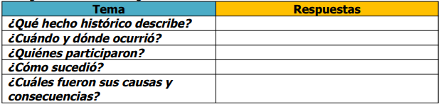

Temas para analizar y reflexionar
Preguntar a los alumnos si recuerdan cuál es el río que servía para la agricultura en Egipto.
Retomar las anotaciones hechas sobre Egipto y el río Nilo de las clases pasadas. Leer la pág. 50 respecto a este tema y
comentar:
¿durante cuánto SEMANA se desarrolló la cultura griega?, ¿qué longitud tiene el Nilo?, ¿dónde se establecieron sus
ciudades?, ¿qué construyeron ahí?, ¿con quiénes se relacionaban sus deidades?
Investigo y valoro. Página 50
vestigo y valoro. Página 50
Leer el poema "Himno al Nilo" en voz alta. Primero en binas, después en filas y finalmente grupal.
Comentar de qué trata y responder en el cuaderno: ¿qué imágenes evoca el poema?, ¿qué sentimientos provoca?, ¿qué
palabras o frases son en sentido figurado?, ¿qué recursos literarios utiliza?
Investigo y valoro. Página 51
nvestigo y valoro. Página 51
Dejar a los alumnos que investiguen la imagen y biografía de Alejandro Magno. Llevar la información al aula y compartirla.
Realizar lectura comentada de Alejandro Magno pág. 51
En equipos preparar una entrevista dirigida a Alejandro Magno, tomando en consideración su educación, sus conquistas
militares, su papel como difusor de la cultura griega, etc.
Simular que un integrante del grupo es Alejandro Magno y contestar como si lo fuera.
Presentar la entrevista ante el grupo.
Finalizar los temas con el siguiente cuadro:
"Egipto el don del Nilo".
"Alejandro Magno, un niño nutrido por la cultura griega".
